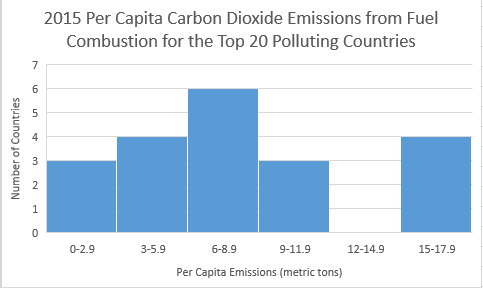
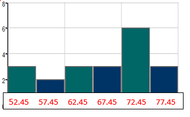
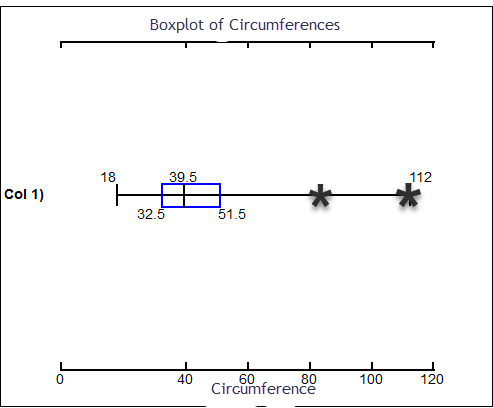
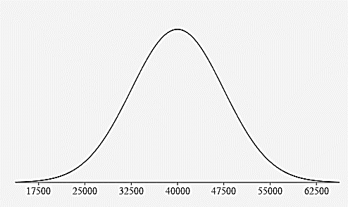
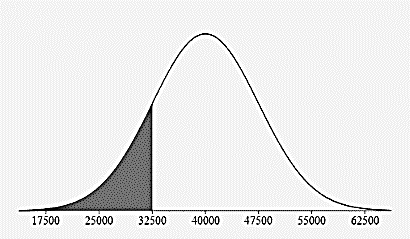
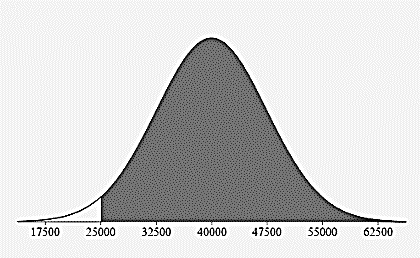
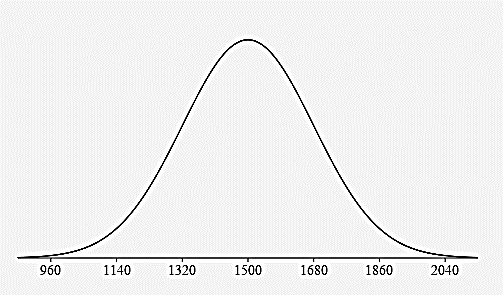
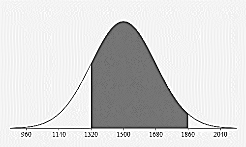
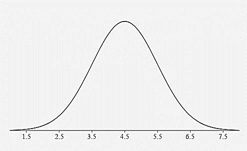

Unit 1 Describing Data
Review
- Determine whether the data are qualitative or quantitative:
- the colors of automobiles on a used car lot
qualitative - the numbers on the shirts of a soccer team
qualitative - the number of seats in a movie theater
quantitative - a list of house numbers on your street
qualitative - the ages of a sample of 350 employees of a large hospital
quantitative
- the colors of automobiles on a used car lot
- Identify the data set’s level of measurement (nominal, ordinal, interval, ratio):
- hair color of players on a high school tennis team
nominal - numbers on the shirts of a soccer team
nominal - ages of students in a statistics class
ratio - temperatures of 22 selected refrigerators
interval - number of milligrams of tar in 28 cigarettes
ratio - number of pages in your statistics book
ratio
- hair color of players on a high school tennis team
- marriage status of the faculty at the local community college
nominal - the rank of a winning Super Bowl team in their division
ordinal - the ratings of a movie ranging from “poor” to “good” to “excellent”
ordinal - the final grades (A,B,C,D, and F) for students in a chemistry class
ordinal - the annual salaries for all teachers in Utah
ratio - list of zip codes for Chicago
nominal - the nationalities listed in a recent survey
nominal - the amount of fat (in grams) in 44 cookies
ratio
| Rank and Country | 2015 Per Capita Carbon Dioxide Emissions from Fuel Combustion (metric tons) |
|---|---|
| 1 China | 6.6 |
| 2 United States | 15.5 |
| 3 India | 1.6 |
| 4 Russia | 10.2 |
| 5 Japan | 9.0 |
| 6 Germany | 8.9 |
| 7 South Korea | 11.6 |
| 8 Iran | 7.0 |
| 9 Canada | 15.3 |
| 10 Saudia Arabia | 16.9 |
| 11 Brazil | 2.2 |
| 12 Mexico | 3.7 |
| 13 Indonesia | 1.7 |
| 14 south Africa | 7.8 |
| 15 United Kingdom | 6.0 |
| 16 Australia | 15.8 |
| 17 Italy | 5.5 |
| 18 Turkey | 4.1 |
| 19 France | 4.4 |
| 20 Poland | 7.3 |
| Frequency | |
|---|---|
| EMISSIONS | FREQUENCY |
0 – 2.9 |
3 |
3 - 5.9 |
4 |
6 - 8.9 |
6 |
9 - 11.9 |
3 |
12 - 14.9 |
0 |
15 - 17.9 |
4 |
| Relative Frequency | |
|---|---|
| EMISSIONS | RELATIVE FREQUENCY |
0 - 2.9 |
15% |
3 – 5.9 |
20% |
6 - 8.9 |
30% |
9 - 11.9 |
15% |
12 - 14.9 |
0% |
15 - 17.9 |
20% |
| Cumulative Frequency | |
|---|---|
| EMISSIONS | CUMULATIVE FREQUENCY |
0 - 2.9 |
3 |
3 - 5.9 |
7 |
6 - 8.9 |
13 |
9 - 11.9 |
16 |
12 - 14.9 |
16 |
15 - 17.9 |
20 |
| Stem | Leaves |
|---|---|
1 |
6 7 |
2 |
2 |
3 |
7 |
4 |
1 4 |
5 |
|
6 |
0 6 |
7 |
0 3 8 |
8 |
9 |
9 |
0 |
10 |
2 |
11 |
6 |
12 |
|
13 |
|
14 |
|
15 |
3 5 8 |
16 |
9 |
Legend 16 |
9 = 16.9 |

![A dot plot representing the 2015 Per Capita Carbon Dioxide Emissions from Fuel Combustion for the Top 20 Polluting Countries. The horizontal axis represents the per capita emissions in metric tons. It starts at 0 and ends at 18, counting by 1. The horizontal axis represents the number of countries and goes from 0 to 4, counting by 1. There are 3 dots at 2 metric tons, 3 dots at 4 metric tons, 2 dots at 6 metric tons, 3 dots at 7 metric tons, 1 dot at 8 metric tons, 2 dots at 9 metric tons, 1 dot at 12 metric tons, 1 dot at 15 metric tons, 2 dots at 16 metric tons, and 1 dot at 17 metric tons.](images/u1reviewp10bk.png)
| 70.5 | 65 | 70 | 51.5 | 57.5 | 61 | 78.5 | 61 | 72 | 64.5 |
| 56.5 | 73 | 69 | 52.5 | 78.5 | 54 | 74.5 | 76 | 70 | 68.5 |
- Make a frequency table of the life expectancies.
Use a starting lower class limit of 50.0 and a class width of 5.0.
Class Frequency 50.0 – 54.9
3
55.0 – 59.9
2
60.0 – 64.9
3
65.0 – 69.9
3
70.0 – 74.9
6
75.0 – 79.9
3
- Answer the following questions based on your histogram:
- What are the class midpoints?
52.45, 57.45, 62.45, 67.45, 72.45, 77.45
- What are your lower class limits?
50.0, 55.0, 60.0, 65.0, 70.0, 75.0
- What are your upper class limits?
54.9, 59.9, 64.9, 69.9, 74.9, 79.9
- Draw a histogram using the class midpoints:

- Use the same data to create a relative frequency distribution:
Classes Relative Frequency 50.0 - 54.9
3/20 = 15%
55.0 - 59.9
2/20 = 10%
60.0 - 64.9
3/20 = 15%
65.0 - 69.9
3/20 = 15%
70.0 - 74.9
6/20 = 30%
75.0 - 79.9
3/20 = 15%
- What are the class midpoints?
AIDS data indicating the number of months a patient with AIDS lives after taking a new antibody drug are as follows (smallest to largest):
| 3 | 4 | 8 | 8 | 10 | 11 | 12 | 13 | 14 | 15 |
| 15 | 16 | 16 | 17 | 17 | 18 | 21 | 22 | 22 | 24 |
| 24 | 25 | 26 | 26 | 27 | 27 | 29 | 29 | 31 | 32 |
| 33 | 33 | 34 | 34 | 35 | 37 | 40 | 44 | 44 | 47 |
- Calculate the measures of center from the given list of numbers.
Mean:
23.6 Median:
24 Mode:
multi-modal Midrange:
25 - Create a frequency table using 2 as the lower limit of the first class and a class width of 8.
CLASS FREQUENCY 2 - 9
4
10 - 17
11
18 - 25
7
26 - 33
10
34 - 41
5
42 - 49
3
- ESTIMATE the mean of the data using the frequency table.
Mean = 23.5 - ESTIMATE the median of the data using the frequency table. First, identify the position of the median. Which CLASS in the frequency table contains the median?
The position of the median is 41/2 = 20.5, so the 21st term, which is in the third CLASS 18 - 25.
| 12.3 | 12.0 | 12.1 | 12.3 | 12.2 | 12.3 | 12.2 |
- Find the Mean, median, mode, midrange.
Mean = 12.2 Median = 12.2 Mode = 2.3 Midrange = 2.15 - Find the mean of the following frequency distribution:
GPA FREQUENCY CLASS MIDPOINT
Frequency x Midpoint
0 - 0.9 4 0.45
1.8
1 - 1.9 7 1.45
10.15
2 - 2.9 12 2.45
29.4
3 - 3.9 15 3.45
51.75
4 - 4.9 6 4.45
26.7
SUM = 44
SUM = 119.8
119.8/44 = 2.72
MEAN = 2.72
- What is the shape of the data represented in the frequency distribution?
Skewed to the left
| 20 | 26 | 52 | 30 | 21 | 36 | 34 | 60 | 57 | 51 | 56 | 63 | 42 |
- Calculate the measures of variation from the given list of numbers.
Range = 43 Variance = 232.6 Standard Deviation = 15.3 - Create a frequency table using 20 as the lower limit of the first class and a class width of 10.
CLASS FREQUENCY MIDPOINT
20 -29
3
24.5
30 - 39
3
34.5
40 - 49
1
44.5
50 - 59
4
54.5
60 - 69
2
64.5
- ESTIMATE the mean of the ages using the frequency table.
Mean = 43.7 - ESTIMATE the standard deviation of the ages using the frequency table.
Standard Deviation = 15.0
| Speed in mph of Driver Ticketed in 30 mph Zone |
Frequency of Speed Reported on the Ticket |
Midpoint |
|---|---|---|
| 42 - 45 | 10 | 43.5 |
| 46 - 49 | 14 | 47.5 |
| 50 - 53 | 7 | 51.5 |
| 54 - 57 | 3 | 55.5 |
| 58 - 61 | 1 | 59.5 |
- Estimate the mean of the data:
Mean = 48.2 - Estimate the standard deviation of the data:
Standard Deviation = 4.2
FIVE-NUMBER SUMMARIES AND PERCENTILES
| 18 | 18 | 19 | 24 | 31 | 34 | 37 | 37 | 38 | 39 |
| 40 | 41 | 49 | 51 | 51 | 52 | 53 | 55 | 83 | 112 |
- CALCULATE THE FOLLOWING
Mean:
44.1 Median:
39.5 Mode:
18, 37, 51 MidRange:
65 Range:
94 Variance:
492.8 Standard Deviation:
22.2 Q1:
32.5 Q3:
51.5 IQR:
51.5 - 32.5 = 19 Are there any outliers in the data?
Yes, 83 and 112 are outliers
Lower Outlier Limit: Q1 – 1.5*IQR 32 – 1.5*19 = 4
Any data point less than 4 is an outlier.
Upper Outlier Limit: Q3 + 1.5*IQR 51.5 + 1.5*19 = 80
Any data point greater than 80 is an outlier.
- CREATE A BOXPLOT OF THE DATA: Mark outliers clearly on the boxplot.

- What is the Percentile of 24?
15th percentile \(\frac{3}{20} \times 100=15\)
- Construct and label a bell curve representing the distribution.

- What percentage of all tires have a life expectancy that is:
Below 32,500 miles?
16% 0.15% + 2.35% + 13.5% 
Above 25,000 miles?
97.5% 13.5% + 34% + 34% 13.5% + 2.35% + 0.15% 
Between 40,000 and 55,000 miles?
47.5% 34% + 13.5% 
- Construct and label a bell curve representing the distribution.

- What percentage of adult cows weigh:
Between 1320 pounds and 1860 pounds?
81.5% 34% + 34% + 13.5% 
Less than 1500 pounds?
50% 
More than 1680 pounds?
16% 
- less than 168 cm?
84% - greater than 147 cm?
97.5% - between 154 cm and 168 cm?
68% - between 147 cm and 175 cm?
95% - Find a z score for a woman that is 156 cm tall:
\(z_{156}=\frac{156-161}{7}=-0.71\) - What does this z-score mean in words:
The woman’s height of 156 cm is 0.71 standard deviations below the mean of 161 cm.
- Find a z score for a woman that is 170 cm tall:
\(z_{170}=\frac{170-161}{7}=1.29\) - What does this z-score mean in words:
The woman’s height of 170 cm is 1.29 standard deviations above the mean of 161 cm.
- Find a z score for a woman that is 161 cm tall:
\(z_{161}=\frac{161-161}{7}=0\) - What does this z-score mean in words:
The woman’s height of 161 cm is 0 standard deviations above or below the mean of 161 cm.
Z SCORES
- Construct and label a bell curve representing the distribution.

- Find the z-score for a runner who finishes in 3.2 hours
\(z_{3.2}=\frac{3.2-4.5}{1}=-1.3\) - What does this z-score mean in words:
A runner’s time of 3.2 hours is 1.3 standard deviations below the mean time of 4.5 hours. (faster than average)
- Find the z-score for a runner who finishes in 5.2 hours:
\(z_{5.2}=\frac{5.2-4.5}{1}=0.7\) - What does this z-score mean in words:
A runner’s time of 5.2 hours is 0.7 standard deviations above the mean time of 4.5 hours. (slower than average)
- Would you consider someone who finishes a marathon in 2 hours and 15 minutes to be very fast? What would their z-score be and what does that mean?
hours and 15 minutes = 2.25 hours (because 15 minutes is ¼ of an hour) \(z_{2.25}=\frac{2.25-4.5}{1}=-2.25\)
A runner’s time of 2.25 hours is 2.25 standard deviations below the mean time of 4.5 hours. This runner’s time would be more than 2 standard deviations below the mean and would be considered unusually fast.
- Use the data to construct a Frequency Distribution Table: Begin with a lower class limit of 30 and a class width of 15.
32 49 53 57 61 64 66 68 68 68 71 72 72 75 79 80 83 85 90 93
CLASS FREQUENCY RELATIVE FREQUENCY 30- 44 1
0.05
45-59
3
0.15
60-74
9
0.45
75-89
5
0.25
90-104
2
0.10
Cumulative Class Cumulative Frequency Less than 45
1
Less than 60
4
Less than 75
13
Less than 90
18
Less than 105
20
- Find the following using the Frequency Table (not the Relative or Cumulative summary information):
- •Lower Class Limit of the 3rd Class
60 - Lower Class Boundary of the 3rd Class
59.5
- •Lower Class Limit of the 3rd Class
- Midpoint of the 3rd Class
67